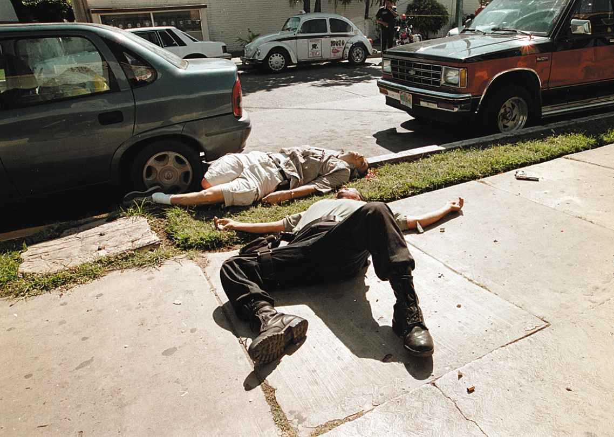
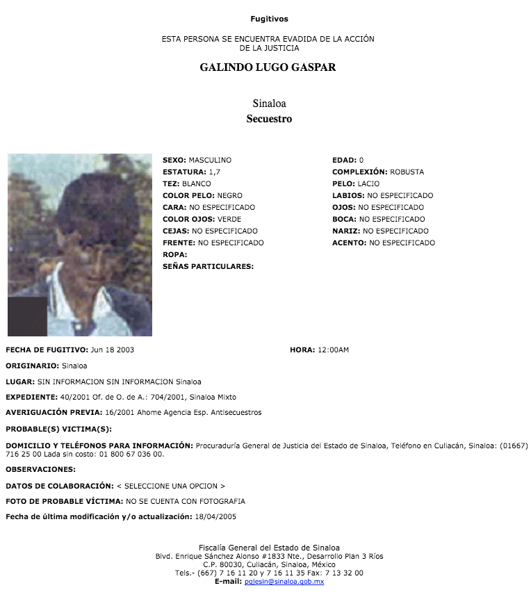

La lista de fugitivos que la Fiscalía escondió
Los más buscados: muertos y detenidos
En la base de datos de personas fugitivas de la Fiscalía General del Estado aparecen muertos y detenidos, algunos de ellos desde hace años.
El 10 de febrero de 2002 era domingo de Carnaval en Mazatlán. Y la gente estaba de fiesta, cuando Efraín Quintero Carrizosa, conocido como “El Efra”, fue asesinado junto con el narcotraficante Ramón Arellano Félix.
A pesar de que el ataque dio la vuelta al mundo al considerarse como un golpe al Cártel de Tijuana, la Fiscalía General del Estado sigue buscando a “El Efra” porque lo considera un hombre peligroso que debe encontrar para encerrarlo en la cárcel, por eso incluyó su nombre dentro de la lista de fugitivos de la justicia y lo agregó en el listado de los más buscados.
A Quintero Carrizosa lo acusaron de masacrar a 12 campesinos en el poblado El Limoncito de Ayalá, en Cosalá. El 14 de febrero de 2001, un grupo armado perteneciente al Cártel de los Arellano Félix, irrumpió en el poblado cuando se festejaba el cumpleaños del comisario Valentín Beltrán Aréchiga, según datos de la Procuraduría General de la República y de Drug Enforcement Administration, DEA por sus siglas en inglés.
La fotografía de su rostro aparece en las dos listas que la dependencia pública tiene publicada en su portal oficial.
...Aún cuando el acompañante de Arellano Félix tiene 16 años muerto.

Él no es la única persona muerta que aparece en la base de datos de personas fugitivas que la Fiscalía tiene habilitada en www.fiscaliasinaloa.mx/, hay otros seis hombres fallecidos que busca.
Y hay más: en la lista, aparecen siete personas que están detenidas. La Fiscalía exhibe a 42 personas que considera prófugos de la justicia. En la liga mencionada, divulga los datos que extrajo de sus expedientes: la fotografía de su rostro; sus señas particulares; su lugar de nacimiento; y en algunos casos, el delito del que se le acusa cometer. También divulga su número de expediente y, en pocas de estas fichas delictivas, revela detalles de cómo y dónde ocurrieron las transgresiones por las cuales las autoridades policiales los persiguen.
¿A quiénes busca la Fiscalía?
La fiscalía busca a personas muertas y detenidas.
En la revisión de cada uno de los 42 fugitivos que la Fiscalía rastrea, se encontraron registros que siete ya están fallecidos, todos en hechos de alto impacto. En esta lista aparece Efraín Quintero Carrizosa, “El Efra”, quien era escolta de Arellano Félix. Fue asesinado en la Zona Dorada, el área turística de Mazatlán, aquel domingo de Carnaval de 2002. Los otros muertos que intentan localizar son: Isidro Madriles Barraza; Gabino Martínez Cabanillas; Nolberto Nevarez Martínez, alías“El Teniente”; Ramiro Reyes García; Feliciano Quintero Carrizosa; y Ricardo Galindo Lugo.
La mayoría son vinculados con las masacres del poblado El Limoncito de Ayalá, en Cosalá, donde asesinaron a 12 campesinos en 2002; y en San Jerónimo de la Ajoya, comunidad de San Ignacio, el Día de las Madres del mismo año, un grupo armado mató a 12 personas, pobladores y policías estatales, cuando buscaba al parecer a un enemigo.
Además de buscar muertos, la Fiscalía también sigue la pista a otros siete presuntos criminales que ya están pagando su condena, algunos de ellos detenidos desde hace 17 años. La captura de los acusados fue publicada por los medios de comunicación locales y nacionales, pero aquí la Fiscalía los busca. En esta situación aparece Gaspar Galindo Lugo, detenido en Nuevo León desde 2001, quien fue acusado de secuestrar al cantante Vicente Fernández Jr., en 1998. El caso fue publicado por medios internacionales, pero aquí las autoridades investigadoras no registraron su detención.

Galindo Lugo tampoco era el único que, ya detenido, era prófugo de la justicia. En la lista también estaban: Guadalupe Barraza Espinoza; Agustín Lugo Guerrero; Melquiades Macías Herrera; Francisco Ochoa Delgado; Hiram Sánchez Zataráin; y José Romualdo Quintero Carrizosa, quienes son acusados de homicidio, secuestro y asociación delictuosa. Y ellos fueron encarcelados entre 2001 al 2016.
Búsquedas demoradas
En el padrón que la Fiscalía mantiene publicado aparecen 42 personas consideradas fugitivas. Ahí están enlistados prófugos que ya han cumplido 20 años en libertad, pero que los investigadores aún no los localizan.
A Raúl Alberto Barraza Gómez lo buscan desde 1997. El hombre, a quien acusan de secuestro, tiene dos décadas burlando a la Fiscalía. En su ficha pública, se informa que es buscado por atentar contra Mónica, a quien se le vio por última vez con él en enero de ese año, desde entonces no se sabe nada de ella. Sin embargo, la autoridad encargada de brindar justicia no reveló el número de expediente, tampoco si existía orden de aprehensión, sólo que el acusado tenía 28 años al momento de la agresión. Hoy Barraza Gómez podría tener 48 años y vivir en libertad
Para José Antonio Serna Valdés, abogado penalista y presidente del Colegio de Abogados de Mazatlán “Marco Antonio Arroyo Camberos”, el padrón de fugitivos publicado por la Fiscalía está desfasado. La publicación de la lista, dice, exhibe la ausencia de mecanismos de búsquedas eficientes para encontrar personas acusadas de cometer delitos de alto impacto. El otro riesgo, alerta el especialista, es que estas listas podrían permitir a los acusados librarse de la justicia debido a que, con el paso de los años, los delitos prescriben.
El Código Penal para el Estado de Sinaloa establece que la prescripción de la aprehensión, sentencia y proceso penal sí es posible con la aplicación de una fórmula, conocida como media aritmética, que se emplea para cada caso. “La prescripción de la potestad de ejecutar las penas, significa que en aquellos delitos donde hay una sentencia, el lapso para ejecutar esa pena es igual al fijado en la sentencia, pero nunca podrá ser inferior a tres años, de acuerdo al Artículo 131 del Código Penal”, cita. Es decir, un sentenciado puede permanecer prófugo el tiempo igual a su condena, y si no es detenido en ese lapso, habrá librado la justicia, advierte Serna Valdés. La fórmula también aplica en otros delitos.
En el caso del homicidio, por ejemplo, se suma la pena mínima que son ocho años y la máxima que son 28 años, según lo que establece el Código Penal para el Estado. La suma de ambas es 36 años, esta cantidad se divide entre dos, el resultado es 18 años. Y ese es el número de años para la prescripción de dicho delito. Aunque, en cada caso, hay que revisar sus agravantes, circunstancias y lo que considere el juez, acota.
En la lista que la Fiscalía hay más de una docena de fugitivos que han cumplido 20 años huyendo de la justicia. Ahora tienen la posibilidad de escapar de la justicia sin pisar la cárcel.
La incapacidad de la fiscalía
Para Marco Lara Klahr, periodista e investigador en Derechos Humanos y Justicia Penal, la Fiscalía General del Estado ha caído en dos supuestos: simula búsquedas o tiene mecanismos deficientes de investigación para localizar a los prófugos.
“Un problema que hay en las fiscalías y en las procuradurías en general es que, como tienen deficientes niveles, casi nulas capacidades de investigación, siempre apuestan a la imputación directa o a la denuncia ciudadana, éste es el primer problema”, exhibe. “Sus capacidades de investigación son de precarias a nulas, es un problema a nivel nacional, y de eso dan cuenta el hecho de que en sus versiones anuales, muestran básicamente que las cifras negras son altísimas, casi el 94 por ciento no denuncia los delitos, porque los investigadores no sirven de mucho o les ponen trabas”, explica.
-¿Y cuáles consideras que son las causas de este abandono?
México a través de su historia ha tenido un sistema de justicia penal inquisitivo, que funciona como un apéndice del poder político, que es un mecanismo de control social más que de derechos, el sistema de justicia penal históricamente ha funcionado como un garrote del poder político y esto ha hecho que no hayan desarrollado aptitudes, sensibilidades que hoy exigen las reformas. Las nuevas prácticas son un asunto tremendo de retraso institucional.
Para el investigador y periodista, urgen la creación de fiscalías autónomas que sí investiguen y no simulen buscar a personas acusadas de cometer delitos. “Aquí sencillamente los ponen arbitrariamente (a los fugitivos) como un tribunal mediático. Los retratos no se pueden reconocer están pésimamente digitalizados, es increíble, son de dos décadas... Los casos se pudren, ellos (autoridades) dan el gatazo de que están haciendo algo”, señala. La otra deficiencia es que, en algunos casos de fugitivos, no se alerta la peligrosidad del acusado, ni se informa por qué es importante la colaboración de la sociedad para las capturas.
Quita Fiscalía lista de los más buscados
En abril, cuando Noroeste solicitó entrevista al fiscal Juan José Ríos Estavillo, para que informara la situación legal de cada caso y los mecanismos de búsqueda de las personas que aparecen en las bases de datos de fugitivos y los más buscados, se eliminaron los nombres de 21 personas que ya estaban detenidas desde hace cinco años o más. La depuración pasó de 63 nombres a 42, pero la lista mantenía los rostros de otras personas muertas y detenidas.
La “limpieza” al portal de la www.fiscaliasinaloa.mx por parte del personal de la dependencia pública continuó. El 16 de mayo, la dependencia quitó las listas de fugitivos y de los más buscados del sitio web oficial, aunque dejó habilitada la liga que se puede consultar. Y a través de una solicitud de información, negó tener dicha información. “Se informa que en la página oficial de la Fiscalía General del Estado de Sinaloa (www.fiscaliasinaloa.mx) en la fecha que se informa no cuenta con la liga o información con los rubros solicitados”, así respondió a la petición de revelar la lista actualizada de los fugitivos de Sinaloa y los más buscados, según la respuesta de información con folio 00531718.
SIDE 1 (NUMERALIA)
42 Personas aparecen en la lista de fugitivos.
7 Están muertos.
7 Están detenidos.
28 Es la cantidad real de acusados en calidad de fugitivos.